Installation Guide¶
EX-SensorCAM is an advanced concept foreign to most model railroaders and consequently deals with many unfamiliar issues. It also calls on multiple software applications to address them. The initial software setup for an inexperienced tinkerer is consequently involved and needing perseverance. The Arduino IDE, the ESP32 libraries, the Processing 4 App, the EX-Command Station and EXRAIL (if used) combine to create a unique system supporting the sensorCAM's own software. Any prior knowledge of these will vastly expedite the installation.
Outline:¶
This installation process is divided into 12 steps outlined below. It is recommended that it be treated as a learning exercise and that testing of progress occur after each major step. For example, familiarization with Arduino IDE should be developed before moving to the ESP32 example, and then familiarize with the ESP32-CAM WiFi example before moving on to the sensorCAM loading.
As the sensorCAM is not for Conductors, and perhaps only advanced Tinkerers, it is anticipated that users will already be familiar with the Arduino IDE and maybe already have toyed with the ESP32-CAM. We have not therefore included much detail on the first few steps but rather referred to existing documentation elsewhere (e.g. Arduino & YouTube). Most detail is provided in steps 4 to 8 at this stage.
The chapters of the full manual may be referred to where additional detail is sought. The 12 steps are:
- Check youtube video then acquire ESP32-CAM and MB/FTDI (OR ESP32-WROVER-DEV CAM)
- install Arduino IDE with the ESP32 libraries (includes a WiFi CAM example)
- Load the CAM with the WiFi example and test.
- Install the sensorCAM.ino software and configure.
- Test the basic sensorCAM functions to confirm functional install
- Load Processing 4 app. and sensorCAM.pde code
- Use the Processing 4 app to replace the Arduino Monitor. Further familiarise and test.
- With a fixed camera, create test sensors and test detection with moving targets.
- Setup the CAM viewing the model railroad and test a virtual sensor with moving rolling stock.
- Optimise parameters for best performance.
- Connect CAM to an i2c interface (e.g. PCA9515A or better)
- Depending on system, integrate sensorCAM into Command Station using appropriate code.
Note: Check version of your CH340 driver in Device Manager - Ports. Change if issues arise.
Recommended system USB driver is 3.5.2019.1 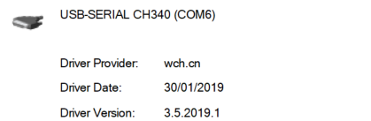
See Drivers for the CH340 for detailed instructions.
Step 1. ESP-32 CAM¶
To understand the animal, watch the video at ESP32 CAM - 10 Dollar Camera for IoT Projects - YouTube
Be aware that you need a USB adapter and the ESP32-CAM-MB is preferred as it avoids hazards associated with a "wired" FTDI power where errors can easily result in CAM destruction. Programming is also easier. Acquire a CAM from your favourite source. Also be prepared for defective product so a spare CAM may be worthwhile. I have had 2 faulty ov2640 modules. ESP32-CAM version 1.9 is preferred (has GND/Reset pin) Purchasing ESP32-CAM-MB as a pair (MB & CAM) is safest. Purchasing two pairs is insurance. Alternatively consider a new compatible ESP32-WROVER-CAM with simpler wiring (see Appendix & sensorCAMmanual)
Step 2. Install the Arduino IDE¶
If you are not already familiar with this IDE (Integrated Development Environment), rather than go into details that are already covered in great detail on the Arduino web page, just follow the instructions in the following link Arduino IDE Guide and then return here.
Step 2A. Install the IDE ESP32 libraries (including for ESP32-CAM).
If you are new to ESP32, the board manager for ESP32 must be loaded. This is explained in the video at the 10minute mark. Note: WE MUST USE esp32 by Espressif. Select version 2.0.17 & Install, NOT latest (3.1.x)
Introduction to ESP32 - Getting Started - YouTube OR Installing - Arduino-ESP32 2.0.17 documentation
OR follow the instructions on the official Espressif guide. again selecting version 2.0.17 to install.
Step 3. Load and test the ESP32-CAM example¶
Select the tools - board manager and the AI thinker ESP32 CAM. Then run the example as per YouTube at 9:30 minutes in. Run the ESP32 - camera - webserver example. Note: wifi uses 2.4GHz NOT a 5GHz wifi.
ESP32 CAM - 10 Dollar Camera for IoT Projects - YouTube For problems with ESP32 connections refer to
If you have an issue uploading to an EX-CSB1 - DCC-EX Model Railroading documentation
Note: With the MB board there is a push button (IO0) that replaces the FTDI programming link. Hold the button in when powering up the CAM to initiate programming mode. With later versions of esp32-CAM the IO0 push button on the MB may not be needed. Ensure a Huge Partition Scheme is selected.
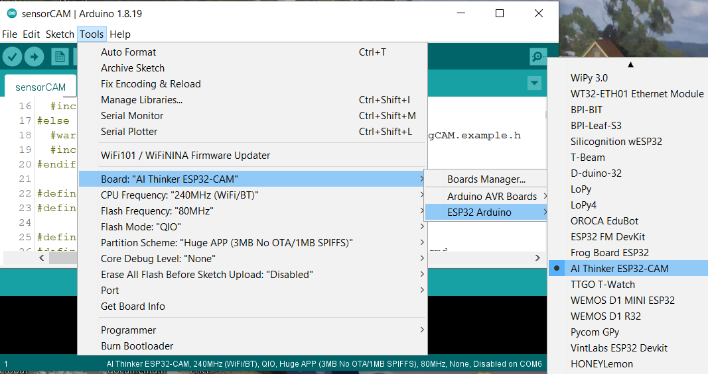
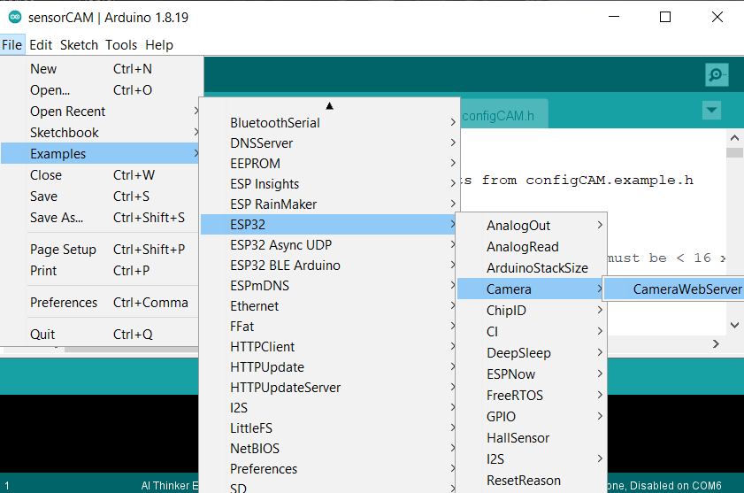
Step4. Install the sensorCAM¶
4.1 For v5.4.xx, Download the software zip to your PC from https://github.com/DCC-EX/EX-SensorCAM
For a "devel" version, rather than "main", select the later "devel" software (for CS v5.5.15 or higher)
4.2 Right click the zip and click Extract all. Browse to your Arduino sketches folder e.g. Documents/Arduino
4.3 Click Extract, creating new folder e.g. Documents/Arduino/EX-SensorCAM-main
4.4 Rename EX-SensorCAM-main to sensorCAM
The essential files for now are shown below. Other files may be used in later install steps.
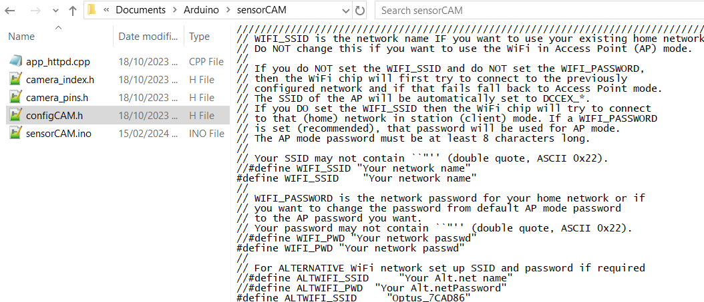
4.5 Using the configCAM.example.h as a guide, create and edit a configCAM.h to reflect your WiFi network name and password.
Then with the correct com port and board selected, compile the sensorCAM.ino sketch.
If all is well, load it into the CAM (replacing the ESP32 WiFi example)
Note: It may be necessary to use the MB IO0 button (or GPIO0 link) to get the CAM into upload mode.
(refer back to video and/or Appendix below)
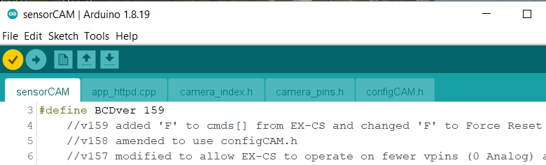
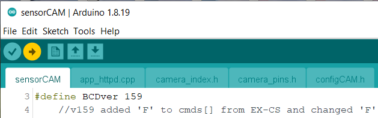

Step 5. Test the basic sensorCAM functions¶
The sensorCAM has a suite of command codes with which you will need familiarity. Refer to the manual summary Appendix A or Chapter 5 (Configuration) for more detailed description. For now, open the Arduino monitor and the initialization procedure should scroll out. It requires that the monitor is set for "115200 baud" and "NewLine" (CR is unacceptable).
After about 15 seconds you can enter the 'w' (wait) command into the monitor and the scrolling should pause. Another command such as 'i00' will give a relevant command response, or Enter alone will resume scrolling tabular output. The sensors still need configuring before they can work. Command 't1' will toggle the scrolling status data ON or OFF.
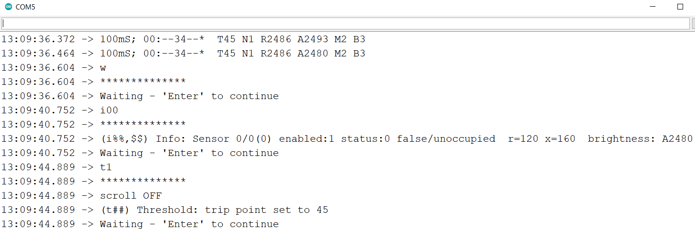
At this time a NEW CAM will have NO sensors set and is a clean slate needing meaningful configuration data. There may be a default sensor(S00) mid field (120,160). If all is well, this would be a good time to familiarize oneself with some commands starting with k10,50,80 to DEFINE your first sensor, followed by i10 to read info. on the new sensor S10 coordinates (50,80). Try a10 to enable sensor 10, quickly followed by w to "wait" scrolling of new sensor values. t1 can be used to toggle ON/OFF the scrolling status data.
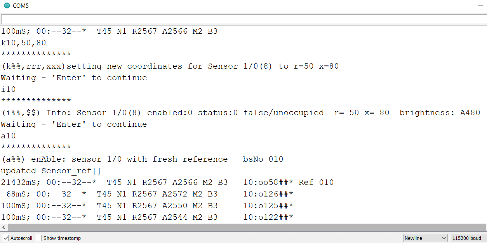
Then try a11,60,90 to DEFINE and ENABLE sensor 11. The 'p1' position pointer command should now list the new sensors and the "difference" score hopefully under 39 for any stable sensor provided the camera is fixed and pointing at a reasonably lit area.
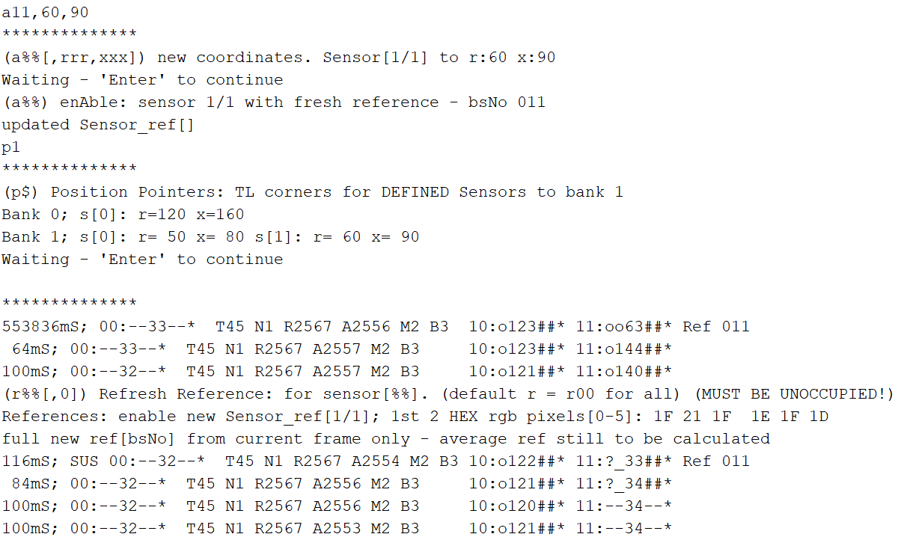
An 'r00' command will take an internal reference photo for ALL sensors (including S10). Follow with 'w'.
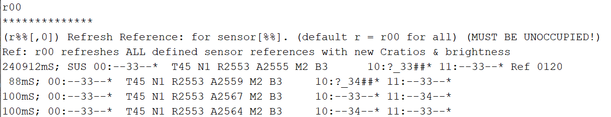
An Enter should resume scrolling with live sensor states and a hand in front of the CAM may trip them (depending on lighting etc.). The w command will again pause scrolling. To save the new sensor settings in EPROM enter the 'e' command. You can undefine(erase) a sensor with 'u', redefine/relocate a sensor with 'a', inspect/interrogate a sensor with 'i', even display the digital (hex) values of pixels in sensor frame with 'f'. Refer to manual chapter 5 for more details on parameters, but do read Section 4.1 (Notation) first.
Note: There are other (easier) ways to position new sensors. The coordinate method is best for "tweaking" positions by small amounts. Step 6 below leads to the preferable visual setting method.
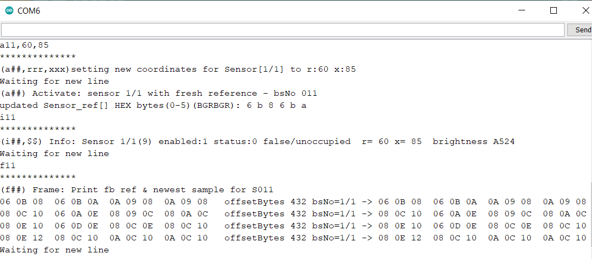
Step 6. Load Processing 4¶
The Arduino monitor is not "visual". The Processing 4 software enables one to see what the CAM sees and permits one to place sensors visually. Close down the Arduino IDE to free up the sensorCAM USB com port.
- Download the "processing-4.3-windows-r64.zip" file from https://processing.org
- Highlight the zip file and "Extract all" files to a suitable Destination directory (process4 say)
- Locate and make a shortcut to the processing-4.3/processing.exe file on the desktop.
- Make a sensorCAM folder in process4 & Copy the sensorCAM.pde file into a process4/sensorCAM directory.
- Click the shortcut thereby opening Processing4
- Click the GetStarted box on the Welcome window
- Click file-open, select sensorCAM.pde and open.
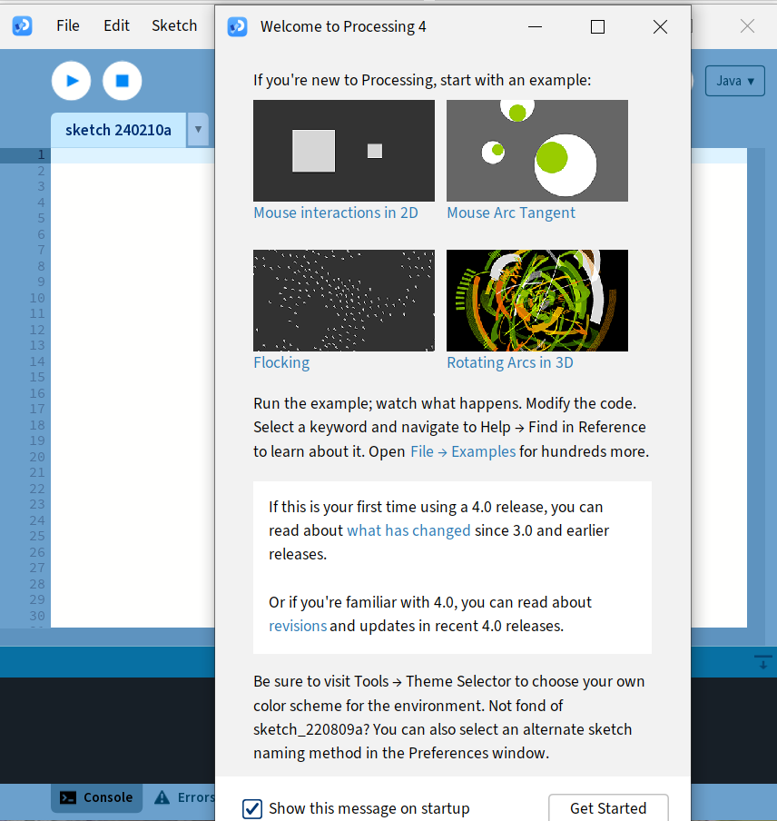
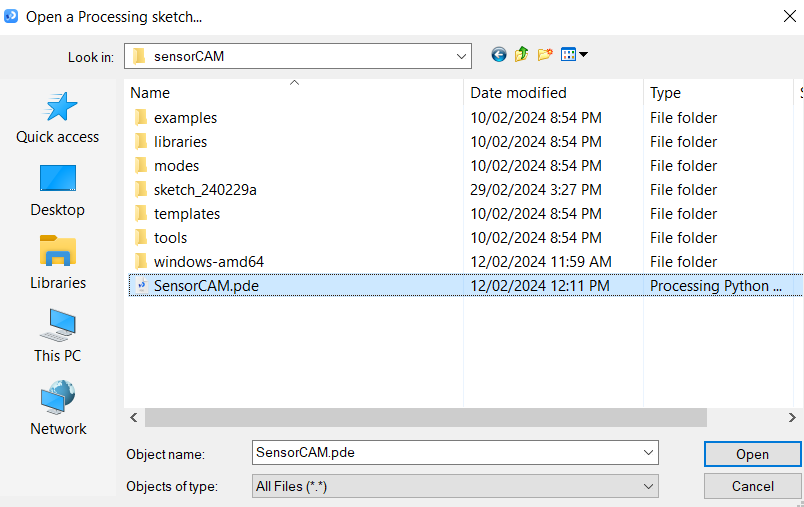
- Click the (left) circular run button to produce the test pattern shown below
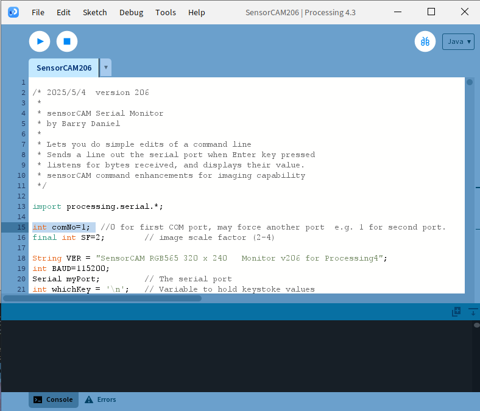
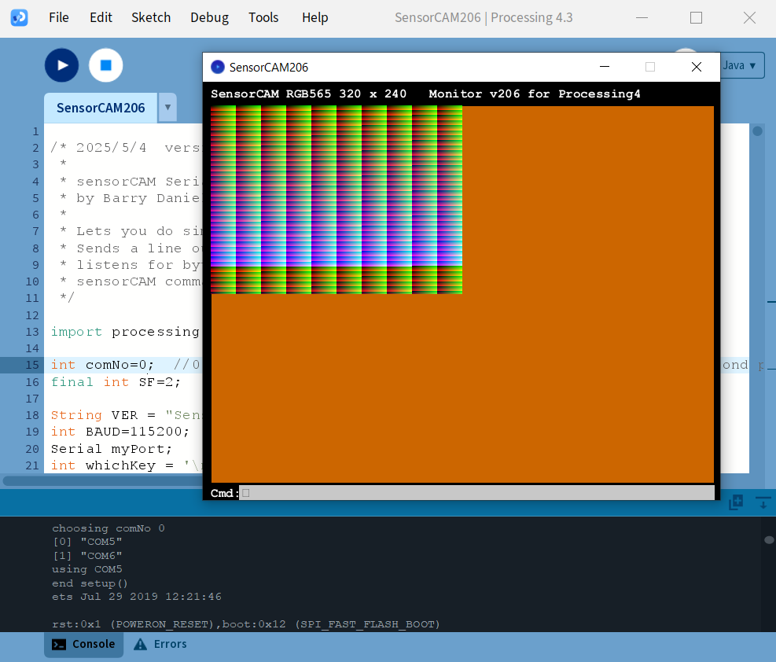
N.B. You may need to edit int comNo=1; if this is an inappropriate port. (see note below)
- Reposition and resize the Console window and test pattern to look like that below, wide enough to avoid line wrap-around. The Cmd: line space will be the text entry line to be used for the CAM commands previously used with Arduino monitor. The broad black Console space replaces the sensorCAM monitor display and the test pattern window is for image display and sensor positioning.
Note the first lines of Console output. Choosing the first [0] COM port is the default. Should you have 2 (or more) COM ports listed, you may have to edit line 15: int comNo=0; to reflect your port the sensorCAM is attached to in the list (e.g. [1] as in image below). (Mac's typically show the port as /dev/cu.usbserial-xx)
- If the sensorCAM reboots and runs, enter cmd: w Enter or ver Enter which will suspend any scrolling and print the sensorCAM version. Use the scroll bar to view the top/bottom of the Console window. Note that you may have to click the mouse cursor on the Cmd: window before typing commands.
Note the dark blue round icon on the taskbar will bring the image to the front should it vanish behind the Console window. The white round button to the right of "Run" will "Stop" the sensorCAM.pde program.
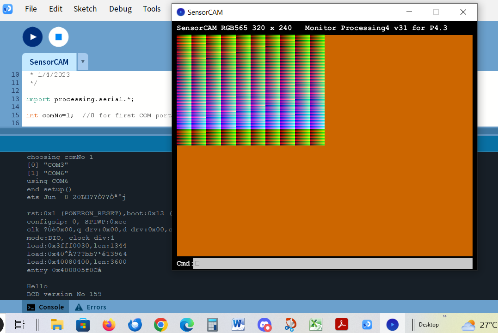
For convenience, locate sensorCAM/sensorCAM.pde and create a shortcut to this file on the desktop.
Optionally, the file Users/[Barry]/AppData/Roaming/Processing/preferences.txt can be edited with a text editor (e.g. notepad) for more convenient startup of sensorCAM.pde. Depending on your screen resolution, for convenience, adjust the window.height.default=700 and window.width.default=1200 as below. This should ensure that the opening Processing 4 window is higher and wide enough to avoid undesirable line-wrapping of scrolling sensor state tabulation. You can adjust these settings later if 700x1200 is not optimum for your screen resolution and sensor count.
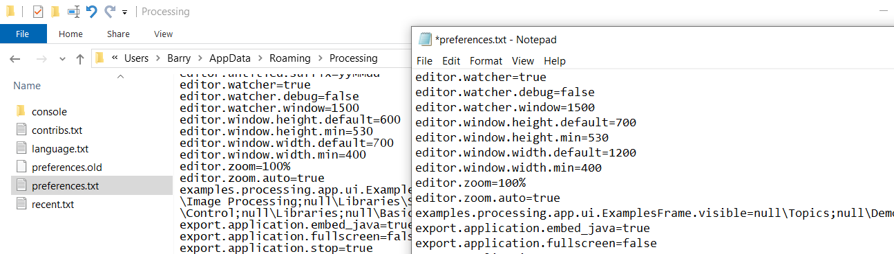
Step 7. Use the Processing 4 App to replace the Arduino monitor.¶
-
The processing app. can communicate the same commands to the sensorCAM as used in Step 5 above.
-
Proceed to verify the sensorCAM commands are generally working as before with Arduino IDE.
-
New commands can now be explored to see still images from the CAM and to see location of defined sensors as small squares. Enter the command 'Y' at the Cmd: line and wait 15 seconds for a full image to appear. Remember the sensors after rebooting will be those last stored in EPROM, not last defined.
To explore the imaging functions (W, X, Y, Z) in depth refer to the sensorCAM manual Chapter 6.
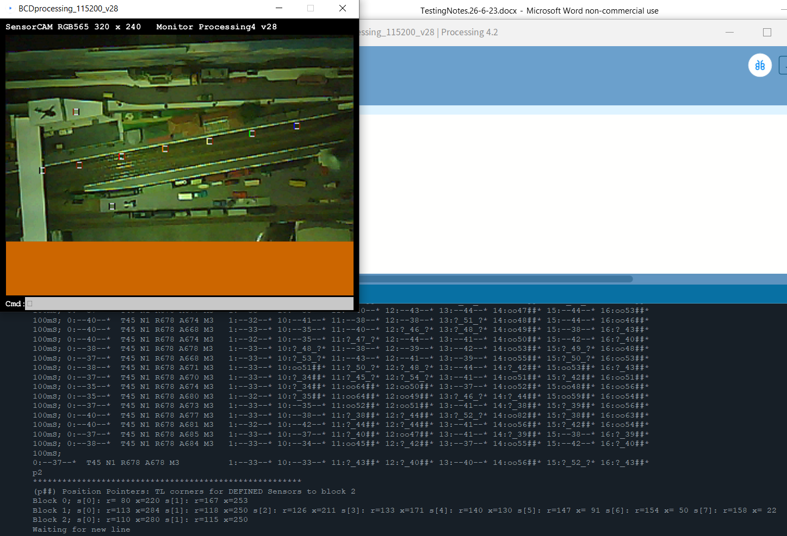
Step 8. Create test sensors and test detection with moving targets¶
Create some test sensors using Processing 4 by typing Cmd: a31 (no Enter!) and following with a click on the image previously obtained as above. The command line will be completed with the cursor coordinates. Follow up with an Enter to define a new sensor S31. Verify the new sensor with a 'p3' command and SEE the new sensor with a new 'Y' command. Later versions "box" the new sensor automatically.
The sensor squares on the image are colour coded with the b/s number using the standard resistor colour codes (refer manual Appendix E).
Place a coloured object at the sensor position and observe the change in the scrolling tabulation for the sensor. Without the obstruction, after a reference command ('r00'), the difference score should be below 39 and with the obstruction the diff score should rise substantially. If the threshold is set ('t42' say) the sensor will "trip" and indicate occupied confirming successful installation. A moving hand test is an easy quick test to do.
It is advisable to define a "reference" sensor S00 that will NOT be obstructed. Any trips of this sensor will indicate an unwanted change to the environment (e.g. lighting). To define such a sensor use a00 and a Processing 4 image "click" on a quiet location away from tracks but with "good" mid-range illumination
(see Manual section 8.4). S00 is reserved and displayed separately at the left of the scrolling status table.
Step 9. Setup the CAM viewing a railroad and test a virtual sensor with moving rolling stock.¶
The CAM must be rigidly mounted, in a "convenient" location for testing at this stage. It may be limited by your cabling reach with USB control. Later, with buffered I2C and power, the sensorCAM may be able to be located more optimally.
The Manual Chapter 5 covers many points of relevance to getting satisfactory detection. Review this chapter and test topics for clarification. Good familiarity leads to success. Initial tests should be with good contrast between track and rolling stock. Refine parameters later to handle more difficult targets.
Step 10. Optimise parameters for best performance.¶
Initially by trial & error users will learn the significance of parameters. This is an Alpha release and consequently the default settings may not be best. Refer sensorCAM manual Appendix B.
Step 11. Connect CAM to an i2c interface (e.g. PCA9515A or better)¶
The quickest and simplest method is to fit a PCA9515A to the ESP32-CAM-MB. Refer to the manual Chapter 3, the pictures in the manual (Figure 7 and Appendix F). Level shifting (3.3V to 5V) for a Mega is the primary function of the PCA9515A. Adjust voltages if not 5V compliant (e.g. ESP32 Command Station). It has 10k pull-up resistors but extra may be needed. If distance is an issue, as the PCA9515A is limited to about 3metres, either an LTC4311A enhancer or a buffered i2c solution will be needed. The manual Ch. 7 & Appendix F describes the PCA9515A used, but the Sparkfun differential Endpoint is also recommended.
Step 12. Depending on system, integrate sensorCAM into Command Station using appropriate code.¶
The CAM can be connected to a "Control Station" via i2c using appropriate host code (typically C++). It has been successfully interfaced to two different (Arduino Mega) systems but most focus has been on the DCC-EX-Command Station (CS). The sensorCAM can be connected to a CS and interrogated using EXRAIL.
If you are wanting to integrate with a CS, we assume you have installed EX-CS previously. If not, refer to the DCC-EX website for details. The following guide assumes you have a working v5.4.x CS in place.
12.1 The EX-SensorCAM repository has an EX-CS directory. These files normally reside with the CommandStation-EX.ino beside the other standard CS files. They are a guide to what is needed in the existing files in the _CommandStation-EX._ino directory. The user generally needs to EDIT existing files rather than copy these. The CamParser.cpp and IO_EXSensorCAM.h drivers already included in CS v5.4.16+ should be adequate for a "Production/master" CS installation, so do NOT copy these files from folder EX-CS unless they represent a known recommended upgrade to the integrated functions. It is advisable to make backups of any file you do need to edit in installing sensorCAM (12.2-12.5 below).
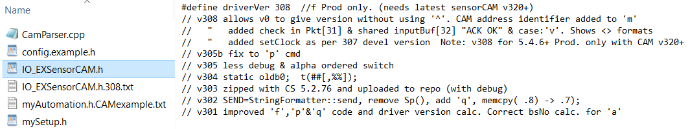
12.2 Edit CS config.h file adding #define SENSORCAM_VPIN 700 and #define CAM SENSORCAM_VPIN+ exactly as shown below for your first CAM. If you do NOT want to use vpins 700 to 779 for the sensorCAM virtual sensors, or use multiple sensorCAM's, you may adjust the vpin number accordingly. Be careful to not change any other CS config.h code from your previous working CS installation. This suits both CS Production (main) version v5.4.0+ and versions v5.5.15+ (devel) versions.
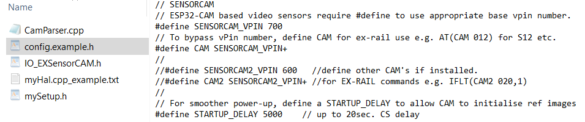
12.3 Edit your myAutomation.h to tell CS to include/create a driver for sensorCAM. Add the sensorCAM driver to your myAutomation.h with a HAL(EXSensorCAM, SENSORCAM_VPIN, 80, 0x11) assuming at I2C address 0x11. The SENSORCAM_VPIN value (typically 700) has been defined in config.h (step 12.2)
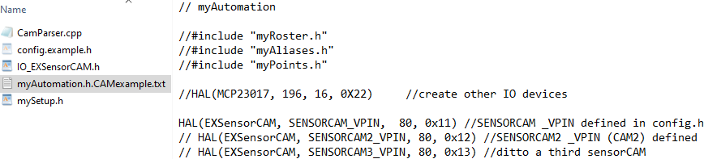
12.4 Now the individual sensor IDs need to be assigned to vPin numbers through the mySetup.h file. They can be added in manually later, so we don't have to have all 80 defined now. (Edit &) copy to the CS folder.
Be sure to include a command I2CManager.setClock(100000); if using an older version of DCC-EX as only the latest IO_EXSensorCAM.h drivers v308 and v309 do this automatically.
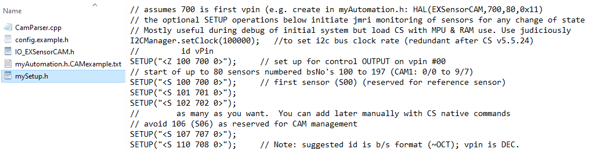
12.5 If you are using the DCC-EX installer keep your revised "myFiles" in the usual place and include them when requested. Otherwise they go in the same directory (CommandStation-EX) as the CommandStation-EX.ino and related files.
With the release of CS Production version v5.4.0, the former sensorCAM myfilter method was made redundant. Versions of CS beyond v5.4.0 all use the CamParser.cpp method and have IO_EXSensorCAM.h CamParser.cpp and CamParser.h included by default. These files DO NOT need to be overwritten. Unless you wish to (were advised to) use the latest "bleeding edge" devel versions offered, proceed to step 12.6.
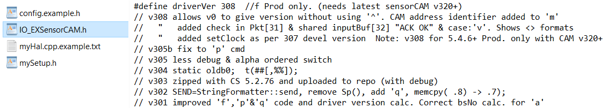
12.6 Once the changes have been put in place, the CommandStation-EX.ino file will have to be recompiled and loaded into the CS (Mega?) using the Arduino IDE, to invoke the changes. Refer to the sensorCAM manual Appendix G for details on using the CS monitor to replace the sensorCAM USB monitor. Initially it would be helpful to maintain a USB monitor on the sensorCAM to catch and verify activity. Note that there are some differences in the capabilities and format of displays between CAM USB monitor and CS. No visual imagery can be obtained via CS (except webcam) once the USB is disconnected. The CAM MUST be flashing to respond correctly to most "Native" CS <N> sensorCAM commands.
12.7 After up-loading to the Command Station, open the Arduino Monitor (at 115200 baud) to see the CS "console". If the sensorCAM i2c is connected and the CAM running (flashing), the user's <Nw> CS command should issue the CAM wait command (stops flashing) and another <Nw> should resume. Note it can be helpful to have 2 instances of the IDE, so you can separately monitor CS and CAM on two USB ports.
The CS installer also has a monitor that can interface to the CS. Try the Processing4 monitor on the CAM.
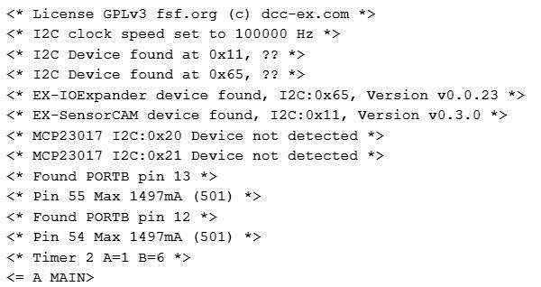
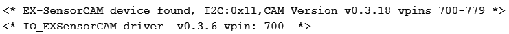
With CAM flashing, try <N m>, <N i 11> and <N t 46> to confirm functionality, then <NM> for current min/max settings. Note <N t 0> command returns the LAST value of threshold. Repeat just to confirm changes, if necessary, or just use <NM>. Cmd <Nv> will show the Vpin usage and version of sensorCAM.
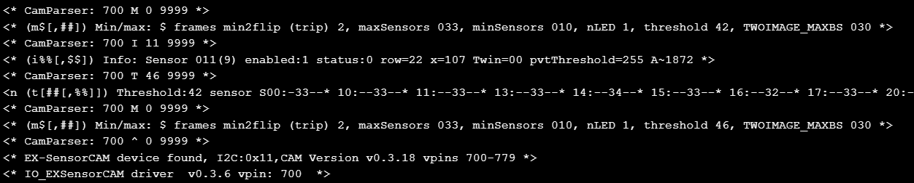
12.8 Powering up the CS and CAM(s) can be problematical. The bootup interactions are affected by the following:
a) ALL devices on an i2c bus should be powered for i2c communications to be reliable.
b) Full sensorCAM boot-up calls MyWire.begin() which FAILS if a) is incomplete.
c) CS bootup executes driver EXSensorCAM::create(); which FAILS if b) is unsuccessful.
To avoid a race between b) and c) the CS has a STARTUP_DELAY 5000 (5sec.) to allow b) time to boot. Rebooting a sensorCAM AFTER 5 seconds (b) can break the connection the CS had established, and so it may need to be followed by a reboot of CS (c).
Opening an Arduino IDE monitor on the CS OR sensorCAM (or uploading software) can cause a reboot of the respective microprocessor, so the above issue needs to be appreciated and catered for, possibly with a following CS or CAM reboot. It is a common issue with all "smart" peripherals (e.g. EX-IOExpander).
12.9 To use EX-RAIL, refer to the EX documentation regarding general sensor usage.
Refer to the sensorCAM manual Appendix H for further tips regarding sensorCAM with EXRAIL.
Note: As there are up to 80 sensors or banks of sensors, the #define CAM .. in step 12.2 above helps. The vPin management can be simplified by using the substitution for vPin of (CAM 0%%) which automatically calculates the vPin for sensor S%%. For example, AT(CAM 010) will wait for S10 to trip.
12.10 To manage MULTIPLE sensorCAMs, it is advisable to follow a convention to avoid errors, as follows:
a) Choose a sequential address range (e.g. 0x11,0x12,0x13,0x14) for CAM1 CAM2 .. CAM4 respectively, and preferably a simple sequential base_vPin series (e.g. 500,600,700 say). Then using Arduino IDE…
b) For each CAM# in turn, open sensorCAM.ino & edit configCAM.h (e.g. #define I2C_DEV_ADDR 0x12 ) AND edit sensorCAM.ino #define BCDver 320 (e.g. change 320 to 12320). THEN File>SaveAs sensorCAM320.12 Upload to CAM# (CAM2). This saves distinct identifiable versions for each one of your multiple CAMs. The 'v' command will identify which CAM is which. (works best for 0x11-17 only)
This fudge makes management of multiple sensorCAMs less error prone ('v' will show version as 12.3.20).
c) In CS myAutomation.h create sequential drivers for CAM,CAM2, .. (starting with CAM 0x11) (e.g. then
HAL(EXSensorCAM, SENSORCAM2_VPIN, 80, 0x12); if needed, repeat for 0x13 & 14.
d) In CS config.h, define CAM2, CAM3 & CAM4 as for CAM in config.h (e.g.
#define SENSORCAM2_VPIN 600
#define CAM2 SENSORCAM2_VPIN+
e) edit CS MySetup.h to display all required sensors in each CAM. e.g. for CAM2 (2bs from base vpin 600)
for(uint16_t b=1; b<=4;b++) for(uint16_t s=0;s<8;s++) Sensor::create(200+b*10+s,600+b*8+s,1);_
N.B. This consumes RAM, so unnecessary sensors my cause a MEGA to run out of memory. If memory is limited, only "create" (JMRI) sensors that you want to see switching/tripping on the CS monitor.
<D RAM> shows remaining free memory. The Command Station cannot run with near 0 free RAM.
f) Once loaded and booted, make use of the CamParser switch-cam commands by adding an [optional] cam # to bs numbers (e.g. <N> <Ni 112> <Np 201> <NV 300> <NC vpin>. <N> shows current CAM (vPin).
g) In EXRAIL scripts, select CAM# by using ID format (CAM# 0%%) e.g. AT(CAM2 012) for sensor S(2)12.
APPENDIX ESP32-CAM pinout reference (CAM version v1.6) & WROVER-CAM¶
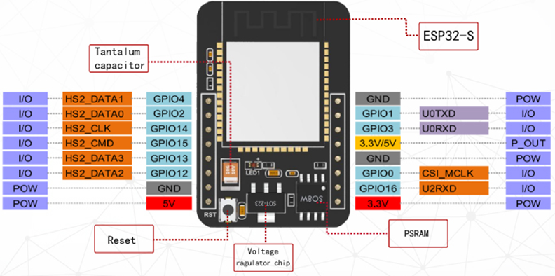
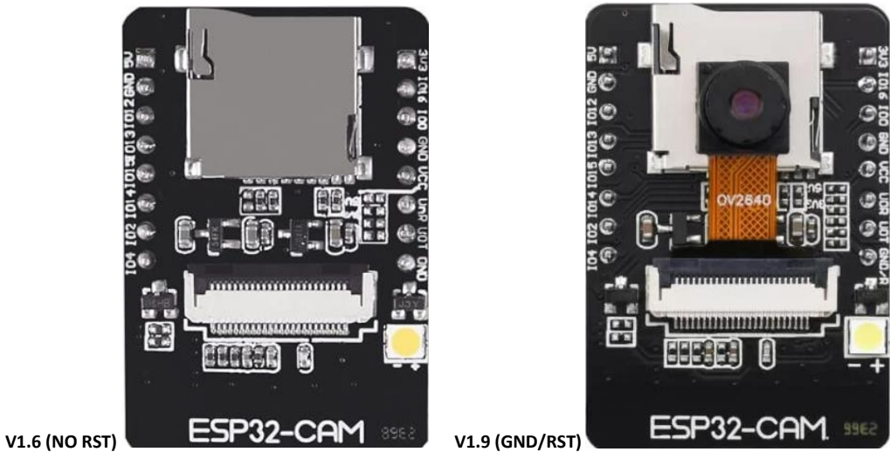
N.B. CAM v1.6 has 4x jumpers (cam side) near U0R/U0T pins & CAM v1.9 has 6x jumpers (including RST)
In board version v1.9, the "GND" pin adjacent GPIO1/U0T is used for RESET (GND/R) to ESP32-CAM and MUST NOT be tied to GND or CAM will remain in RESET mode. CHIP version shows at start of upload, e.g.
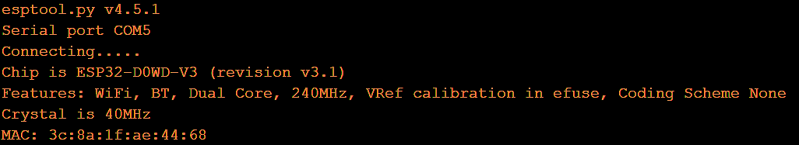
The esp32-CAM-MB obtained with extra headers uses an 8pin CH340N IC unlike the 16 pin package used on the "regular" MB devices (micro-B). The wider MB (Type C) also has an issue in that it does NOT have a reset pin because the RST/GND socket is PERMANENTLY connected to GND which may hold CAM v1.9 in permanent Reset.
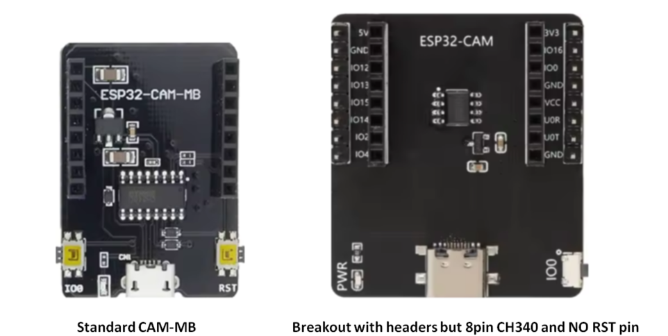
So - without butchery, one can only use the v1.6 CAM's on this board ☹, and even then will have to hold the IO0 button in (grounding it) on reset until upload is progressing. As a workaround for v1.9, it may be possible to slice off this MB GND socket completely. View the Camera side of the ESP32-CAM to distinguish the boards.
Identification: ESP32-CAM v1.6 has 4x jumpers beside UOR/UOT pins and v1.9 has 6x jumpers (inc. Reset).
Using v1.6 with no RTS/DTR reset, users may have to boot up holding IO0 button in to get into programming mode.
ESP32-WROVER-DEV or FREENOVE ESP32-WROVER-CAM board with 4Mb PSRAM is an acceptable single board substitute for the ESP32-CAM-MB combo. Both use the ov2640 camera. Version v316 of sensorCAM incorporated minor adjustments to cater for the WROVER pinout differences. The WROVER may be about twice the cost of the ESP32-CAM-MB (without tarrifs), but, if you have one, it is simpler and may be better quality.
The WROVER has many more pins than the CAM-MB and may be repurposed without the CAM, BUT with the ov2640 CAM module there is really only one extra pin (GPIO32) free.
The FLASH LED is missing, but the on-board blue LED has an output pin GPIO2 instead of GPIO4. SensorCAM v316 flashes the blue LED. There is no fitted external antenna socket.
To use sensorCAM (v316 and above) with the WROVER (using i2c pullups on Endpint):
1. Add #define CAMERA_MODEL_WROVER_KIT to the end of configCAM.h
2. Before compiling, select ESP32 board 'ESP32 Wrover Module' (and 'huge/No OTA' partition) (still using Board Manager installed Espressif 2.0.17, not any newer version)
3. Compile & upload sensorCAM.ino (v320) as per ESP32-CAM (using WROVER USB port).
4. Recommended: Add a 1uF capacitor, reset(EN)-GND and, if needing the programmable LED (pLED), connect a high efficiency LED between 3.3V (NOT 5V) & GPIO14 via a 470R resistor to the 38P Expander board as was suggested for the ESP32-CAM-MB.
5. Wire the external unregulated (7-9V) power links to the barrel connector and i2c SDA & SCL to matching pins (P13&P15) similar to the ESP32-CAM-MB.
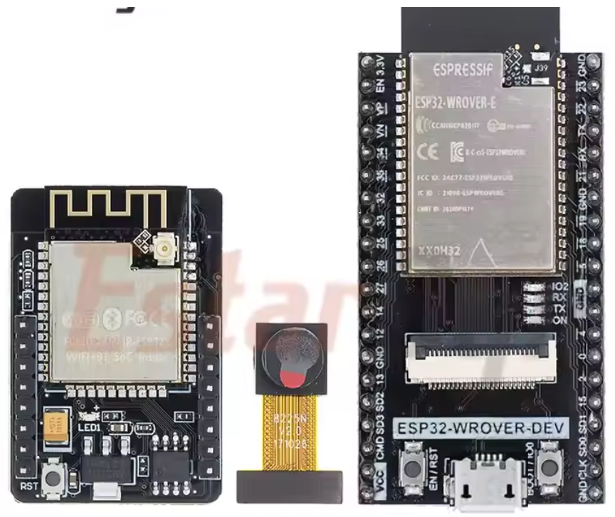

The WROVER based sensorCAM, using an ESP32S 38-pin Expansion board and Sparkfun Endpoint, offers the simplest hardware and interconnect shown below. It is a good alternative to the ESP32-CAM-MB based options. Search for WROVER in the sensorCAM manual (v3.18) for additional details on this recommended hardware. N.B. the 2 USB ports on expander are 5V power only, without any comms.
Note the two "surplus" pins on the 40-pin CAM USB end (Vcc & GND) and assemble appropriately.
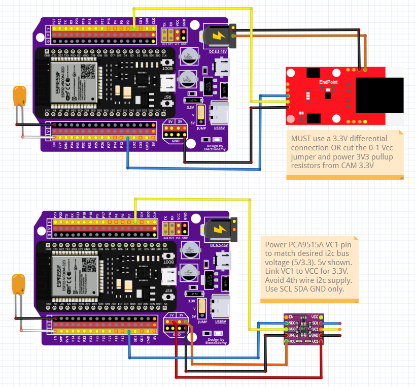
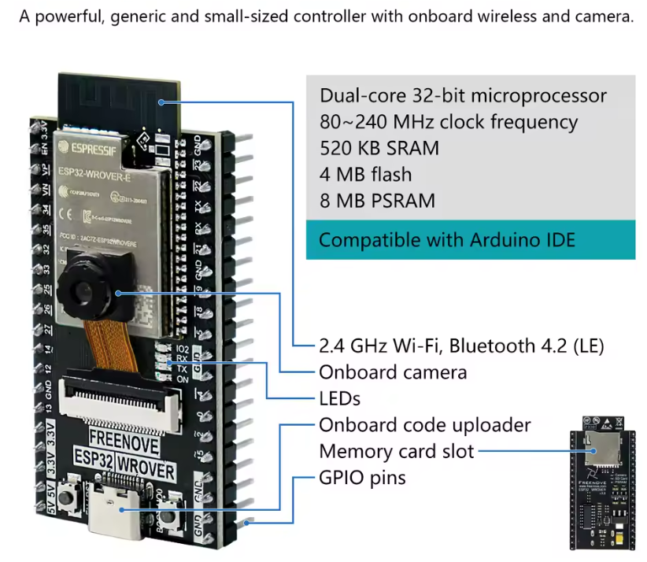
The sensorCAM software does not use any memory card slot and uses only 4MB PSRAM so the reduced spec. of the 240MHz ESP32-WROVER-DEV product is equally adequate and has a compatible footprint.